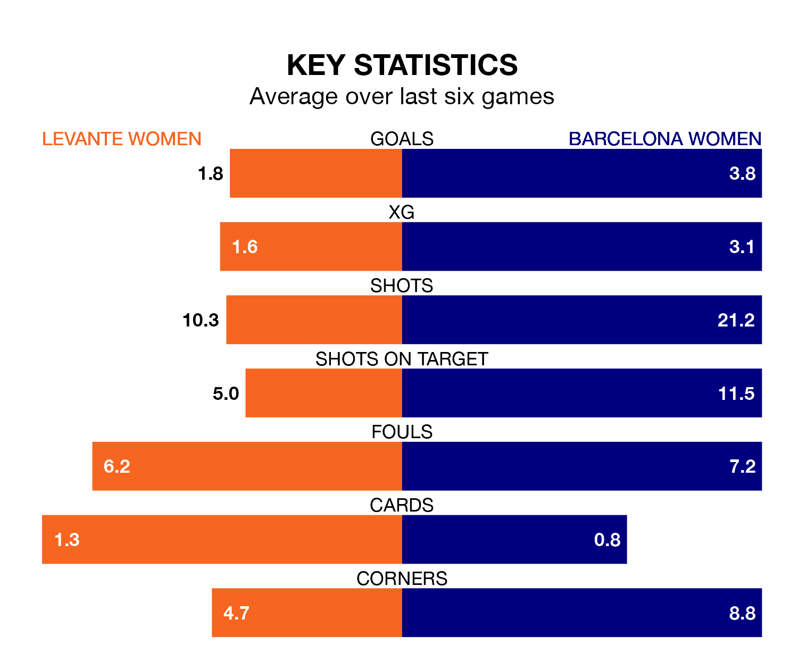

Two of Liga F's top sides face each other at Ciudad Deportiva de Buñol-Campo 1 in Sunday's late kick-off, when third-placed Levante Women host table-topping Barcelona Women.
Levante have picked up 12 wins and seven draws from 21 games so far this season, and sit 18 points below the visitors going into the 5pm match.
Barcelona, meanwhile, have won 20 and drawn one, picking up 61 points.
With 92 goals in 21 games so far this season, Barcelona are the league's highest scorers with 4.4 goals per game. And they are conceding fewer than average, letting in five goals at a rate of 0.2 per game.
Levante are also above average scorers, with 1.9 goals per game, compared to a league average of 1.6. They have conceded 0.6 goals per game.
In Caroline Graham Hansen, the visitors have the league's sharpest shooter so far this season. She has notched 17 goals in 19 appearances.
The home team's top scorers, with nine goals each, are Gabriela Nunes da Silva and Alba María Redondo Ferrer.
Levante are in mixed form in Liga F, with two wins and three draws from their last six games.
With five wins and a draw over that period, Barcelona's form is much better – they have taken 16 points from 18, compared to Levante's nine.
In the last 10 years, Levante and Barcelona have played each other on 18 occasions. Levante won one of them, Barcelona 15, and they drew twice.
On average, Levante scored 0.4 goals and Barcelona 3.3 in those matches.
Their last meeting was on February 14, when they played out a 1-1 draw.
Levante's last match was on March 23, a 7-0 win against Real Betis Women, with Redondo Ferrer (two), Antonia Ronnycleide da Costa Silva, Estela Carbonell, Nunes da Silva, Nuria Ligero Fernández (own goal) and Paula Perea Ramírez (own goal) getting the goals for Levante.
Barcelona beat Real Madrid Women 3-0 last time out, on Sunday, with Aitana Bonmati Conca, Fridolina Rolfö and Graham Hansen on the scoresheet.
Updated: 12:16 (UTC), 25/03/24